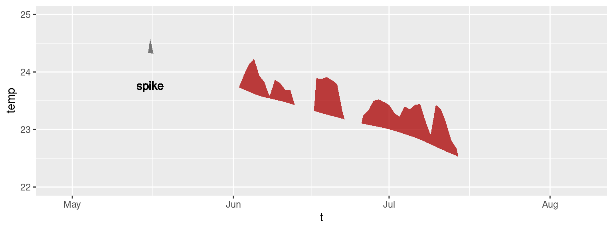

Basic Detection and Visualisation of Events
AJ Smit and Robert W Schlegel
2024-08-30
Source:vignettes/detection_and_visualisation.Rmd
detection_and_visualisation.RmdData
The detect_event() function is the core of this package,
and it expects to be fed the output of the second core function,
ts2clm(). By default, ts2clm() wants to
receive a two-column dataframe with one column labelled t
containing all of the date values, and a second column temp
containing all of the temperature values. Please note that the date
format it expects is “YYYY-MM-DD”. For example, please see the top five
rows of one of the datasets included with the
heatwaveR package:
## # A tibble: 6 × 2
## t temp
## <date> <dbl>
## 1 1982-01-01 20.9
## 2 1982-01-02 21.2
## 3 1982-01-03 21.4
## 4 1982-01-04 21.2
## 5 1982-01-05 21.3
## 6 1982-01-06 21.6It is possible to use different column names other than
t and temp with which to calculate events.
Please see the help files for ts2clm() or
detect_event() for a thorough explanation of how to do
so.
Loading ones data from a .csv file or other text based
format is the easiest approach for the calculation of events, assuming
one is not working with gridded data (e.g. NetCDF). Please see this
vignette for a detailed walkthrough on using the functions in this
package with gridded data.
Calculating marine heatwaves (MHWs)
Here are the ts2clm() and detect_event()
function applied to the Western Australia test data included with this
package (sst_WA), which are also discussed by Hobday et
al. (2016):
library(dplyr)
library(ggplot2)
library(heatwaveR)
# Detect the events in a time series
ts <- ts2clm(sst_WA, climatologyPeriod = c("1982-01-01", "2011-12-31"))
mhw <- detect_event(ts)
# View just a few metrics
mhw$event %>%
dplyr::ungroup() %>%
dplyr::select(event_no, duration, date_start, date_peak, intensity_max, intensity_cumulative) %>%
dplyr::arrange(-intensity_max) %>%
head(5)## event_no duration date_start date_peak intensity_max intensity_cumulative
## 1 52 105 2010-12-24 2011-02-28 6.5798 293.2107
## 2 41 35 2008-03-25 2008-04-14 3.8299 79.3307
## 3 29 95 1999-05-13 1999-05-22 3.6390 240.2994
## 4 60 14 2012-12-27 2012-12-31 3.4230 32.2560
## 5 59 101 2012-01-10 2012-01-27 3.3804 214.0509Visualising marine heatwaves (MHWs)
Default MHW visuals
One may use event_line() and lolli_plot()
directly on the output of detect_event() in order to
visualise MHWs. Here are the functions being used to visualise the
massive Western Australian heatwave of 2011:
event_line(mhw, spread = 180, metric = intensity_max,
start_date = "1982-01-01", end_date = "2014-12-31")
lolli_plot(mhw, metric = intensity_max)
Custom MHW visuals
The event_line() and lolli_plot() functions
were designed to work directly on the list returned by
detect_event(). If more control over the figures is
required, it may be useful to create them in
ggplot2 by stacking geoms. We
specifically created two new ggplot2
geoms to reproduce the functionality of
event_line() and lolli_plot(). These functions
are more general in their functionality and can be used outside of the
heatwaveR package, too. To apply them to
MHWs and MCSs first requires that we access the climatology
or event dataframes within the list that is produced by
detect_event(). Here is how:
# Select the region of the time series of interest
mhw2 <- mhw$climatology %>%
slice(10580:10720)
ggplot(mhw2, aes(x = t, y = temp, y2 = thresh)) +
geom_flame() +
geom_text(aes(x = as.Date("2011-02-25"), y = 25.8, label = "the Destroyer\nof Kelps"))
ggplot(mhw$event, aes(x = date_start, y = intensity_max)) +
geom_lolli(colour = "salmon", colour_n = "red", n = 3) +
geom_text(colour = "black", aes(x = as.Date("2006-08-01"), y = 5,
label = "The marine heatwaves\nTend to be left skewed in a\nGiven time series")) +
labs(y = expression(paste("Max. intensity [", degree, "C]")), x = NULL)
Spicy MHW visuals
The default output of these function may not be to your liking. If
so, not to worry. As ggplot2
geoms, they are highly malleable. For example, if we were
to choose to reproduce the format of the MHWs as seen in Hobday et
al. (2016), the code would look something like this:
# It is necessary to give geom_flame() at least one row on either side of
# the event in order to calculate the polygon corners smoothly
mhw_top <- mhw2 %>%
slice(5:111)
ggplot(data = mhw2, aes(x = t)) +
geom_flame(aes(y = temp, y2 = thresh, fill = "all"), show.legend = T) +
geom_flame(data = mhw_top, aes(y = temp, y2 = thresh, fill = "top"), show.legend = T) +
geom_line(aes(y = temp, colour = "temp")) +
geom_line(aes(y = thresh, colour = "thresh"), size = 1.0) +
geom_line(aes(y = seas, colour = "seas"), size = 1.2) +
scale_colour_manual(name = "Line Colour",
values = c("temp" = "black",
"thresh" = "forestgreen",
"seas" = "grey80")) +
scale_fill_manual(name = "Event Colour",
values = c("all" = "salmon",
"top" = "red")) +
scale_x_date(date_labels = "%b %Y") +
guides(colour = guide_legend(override.aes = list(fill = NA))) +
labs(y = expression(paste("Temperature [", degree, "C]")), x = NULL)
It is also worth pointing out that when we use
geom_flame() directly like this, but we don’t want to
highlight events greater less than our standard five day length,
allowing for a two day gap, we want to use the arguments n
and n_gap respectively.
mhw3 <- mhw$climatology %>%
slice(850:950)
ggplot(mhw3, aes(x = t, y = temp, y2 = thresh)) +
geom_flame(fill = "black", alpha = 0.5) +
# Note the use of n = 5 and n_gap = 2 below
geom_flame(n = 5, n_gap = 2, fill = "red", alpha = 0.5) +
ylim(c(22, 25)) +
geom_text(colour = "black", aes(x = as.Date("1984-05-16"), y = 24.5,
label = "heat\n\n\n\n\nspike"))
Should we not wish to highlight any events with
geom_lolli(), plot them with a colour other than the
default, and use a different theme, it would look like this:
ggplot(mhw$event, aes(x = date_peak, y = intensity_max)) +
geom_lolli(colour = "firebrick") +
labs(x = "Peak Date",
y = expression(paste("Max. intensity [", degree, "C]")), x = NULL) +
theme_linedraw()
Because these are simple ggplot2 geoms
possibilities are nearly infinite.
Calculating marine cold-spells (MCSs)
The calculation and visualisation of cold-spells is also provided for within this package. The data to be fed into the functions is the same as for MHWs. The main difference is that one is now calculating the 10th percentile threshold, rather than the 90th percentile threshold. Here are the top five cold-spells (cumulative intensity) detected in the OISST data for Western Australia:
# First calculate the cold-spells
ts_10th <- ts2clm(sst_WA, climatologyPeriod = c("1982-01-01", "2011-12-31"), pctile = 10)
mcs <- detect_event(ts_10th, coldSpells = TRUE)
# Then look at the top few events
mcs$event %>%
dplyr::ungroup() %>%
dplyr::select(event_no, duration, date_start,
date_peak, intensity_mean, intensity_max, intensity_cumulative) %>%
dplyr::arrange(intensity_cumulative) %>%
head(5)## event_no duration date_start date_peak intensity_mean intensity_max
## 1 15 76 1990-04-13 1990-05-11 -2.5027 -3.1883
## 2 49 58 2003-12-19 2004-01-23 -1.7341 -2.5865
## 3 83 41 2020-04-26 2020-05-25 -2.3374 -3.1433
## 4 64 52 2014-04-14 2014-05-05 -1.7824 -2.5358
## 5 77 46 2018-07-24 2018-08-02 -1.8096 -2.4311
## intensity_cumulative
## 1 -190.2043
## 2 -100.5806
## 3 -95.8339
## 4 -92.6844
## 5 -83.2407Visualising marine cold-spells (MCSs)
Default MCS visuals
The default plots showing cold-spells look like this:
event_line(mcs, spread = 200, metric = intensity_cumulative,
start_date = "1982-01-01", end_date = "2014-12-31")
lolli_plot(mcs, metric = intensity_cumulative, xaxis = event_no)
Note that one does not need to specify that MCSs are to be visualised, the functions are able to understand this on their own.
Custom MCS visuals
Cold spell figures may be created as geoms in
ggplot2, too:
# Select the region of the time series of interest
mcs2 <- mcs$climatology %>%
slice(2900:3190)
# Note that one must specify a colour other than the default 'salmon'
ggplot(mcs2, aes(x = t, y = thresh, y2 = temp)) +
geom_flame(fill = "steelblue3")
ggplot(mcs$event, aes(x = date_start, y = intensity_max)) +
geom_lolli(colour = "steelblue3", colour_n = "navy", n = 3) +
labs(x = "Start Date",
y = expression(paste("Max. intensity [", degree, "C]")))
Minty MCS visuals
Again, because geom_flame() and
geom_lolli() are simple
ggplot2 geoms, one can go completely
bananas with them:
mcs_top <- mcs2 %>%
slice(125:202)
ggplot(data = mcs2, aes(x = t)) +
geom_flame(aes(y = thresh, y2 = temp, fill = "all"), show.legend = T) +
geom_flame(data = mcs_top, aes(y = thresh, y2 = temp, fill = "top"), show.legend = T) +
geom_line(aes(y = temp, colour = "temp")) +
geom_line(aes(y = thresh, colour = "thresh"), size = 1.0) +
geom_line(aes(y = seas, colour = "seas"), size = 1.2) +
scale_colour_manual(name = "Line Colour",
values = c("temp" = "black", "thresh" = "forestgreen", "seas" = "grey80")) +
scale_fill_manual(name = "Event Colour", values = c("all" = "steelblue3", "top" = "navy")) +
scale_x_date(date_labels = "%b %Y") +
guides(colour = guide_legend(override.aes = list(fill = NA))) +
labs(y = expression(paste("Temperature [", degree, "C]")), x = NULL)
ggplot(mcs$event, aes(x = date_start, y = intensity_cumulative)) +
geom_lolli(colour = "steelblue3", colour_n = "navy", n = 7) +
labs( x = "Start Date", y = expression(paste("Cumulative intensity [days x ", degree, "C]")))
Interactive visuals
As of heatwaveR v0.3.6.9002,
geom_flame() was also able to be used with
plotly to allow for interactive MHW
visuals. Unfortunately around December of 2020 the
plotly packaged was orphaned and CRAN
decided it didn’t want packages to include it as an imported package.
Therefore as of v0.4.4.9005 heatwaveR no
longer has built in support for using geom_flame() with
plotly. It is however still possible with
a bit of work and a simple working example is given below. It is not
currently possible to use geom_lolli() with
plotly. Rather one is advised to just
create the dots and segments separately with geom_point()
and geom_segment() respectively as these are already
recognised by plotly.
Note that the following code chunk is not run as it makes this vignette a bit too large.
# Must load plotly library first
library(plotly)
# Function needed for making geom_flame() work with plotly
geom2trace.GeomFlame <- function (data,
params,
p) {
x <- y <- y2 <- NULL
# Create data.frame for ease of use
data1 <- data.frame(x = data[["x"]],
y = data[["y"]],
y2 = data[["y2"]])
# Grab parameters
n <- params[["n"]]
n_gap <- params[["n_gap"]]
# Find events that meet minimum length requirement
data_event <- heatwaveR::detect_event(data1, x = x, y = y,
seasClim = y,
threshClim = y2,
minDuration = n,
maxGap = n_gap,
protoEvents = T)
# Detect spikes
data_event$screen <- base::ifelse(data_event$threshCriterion == FALSE, FALSE,
ifelse(data_event$event == FALSE, TRUE, FALSE))
# Screen out spikes
data1 <- data1[data_event$screen != TRUE,]
# Prepare to find the polygon corners
x1 <- data1$y
x2 <- data1$y2
# # Find points where x1 is above x2.
above <- x1 > x2
above[above == TRUE] <- 1
above[is.na(above)] <- 0
# Points always intersect when above=TRUE, then FALSE or reverse
intersect.points <- which(diff(above) != 0)
# Find the slopes for each line segment.
x1.slopes <- x1[intersect.points + 1] - x1[intersect.points]
x2.slopes <- x2[intersect.points + 1] - x2[intersect.points]
# # Find the intersection for each segment.
x.points <- intersect.points + ((x2[intersect.points] - x1[intersect.points]) / (x1.slopes - x2.slopes))
y.points <- x1[intersect.points] + (x1.slopes * (x.points - intersect.points))
# Coerce x.points to the same scale as x
x_gap <- data1$x[2] - data1$x[1]
x.points <- data1$x[intersect.points] + (x_gap*(x.points - intersect.points))
# Create new data frame and merge to introduce new rows of data
data2 <- data.frame(y = c(data1$y, y.points), x = c(data1$x, x.points))
data2 <- data2[order(data2$x),]
data3 <- base::merge(data1, data2, by = c("x","y"), all.y = T)
data3$y2[is.na(data3$y2)] <- data3$y[is.na(data3$y2)]
# Remove missing values for better plotting
data3$y[data3$y < data3$y2] <- NA
missing_pos <- !stats::complete.cases(data3[c("x", "y", "y2")])
ids <- cumsum(missing_pos) + 1
ids[missing_pos] <- NA
# Get the correct positions
positions <- data.frame(x = c(data3$x, rev(data3$x)),
y = c(data3$y, rev(data3$y2)),
ids = c(ids, rev(ids)))
# Convert to a format geom2trace is happy with
positions <- plotly::group2NA(positions, groupNames = "ids")
positions <- positions[stats::complete.cases(positions$ids),]
positions <- dplyr::left_join(positions, data[,-c(2,3)], by = "x")
if(length(stats::complete.cases(positions$PANEL)) > 1)
positions$PANEL <- positions$PANEL[stats::complete.cases(positions$PANEL)][1]
if(length(stats::complete.cases(positions$group)) > 1)
positions$group <- positions$group[stats::complete.cases(positions$group)][1]
# Run the plotly polygon code
if(length(unique(positions$PANEL)) == 1){
getFromNamespace("geom2trace.GeomPolygon", asNamespace("plotly"))(positions)
} else{
return()
}
}
# Time series
ts_res <- heatwaveR::ts2clm(data = heatwaveR::sst_WA,
climatologyPeriod = c("1982-01-01", "2011-12-31"))
ts_res_sub <- ts_res[10500:10800,]
# Flame Figure
p <- ggplot(data = ts_res_sub, aes(x = t, y = temp)) +
heatwaveR::geom_flame(aes(y2 = thresh), n = 5, n_gap = 2) +
geom_line(aes(y = temp)) +
geom_line(aes(y = seas), colour = "green") +
geom_line(aes(y = thresh), colour = "red") +
labs(x = "", y = "Temperature (°C)")
# Create interactive visuals
ggplotly(p)